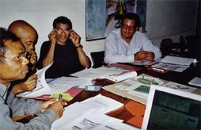

|
Stratagènes, un jeu de rôles sur la négociation
patrimoniale
pour la gestion des ressources phytogénétiques
Sigrid Aubert, Christophe Le Page
 Motivation de la créationLe jeu a initialement été crée dans un but pédagogique pour la formation des médiateurs environnementaux qui, à Madagascar, interviennent dans le transfert de gestion des ressources naturelles renouvelables de l'Etat vers les Communautés de base (GELOSE). Il s'agissait d'une part de leur faire comprendre la diversité des points de vue des personnes impliquées dans la gestion de la forêt (que leurs interventions soient légales ou légitimes), les interactions entre écosystème, espèces et ressources génétiques, et d'autre part d'explorer les dispositions légales et légitimes susceptibles d'accompagner le transfert de gestion. Description et spécificitéLes 7 rôles retenus expriment la diversité des acteurs impliqués dans la gestion des ressources phytogénétiques d'un terroir (2 chefs de lignage, 1 garde forestier, 1 ONG, 1 industriel, 1scientifique et 1 médiateur). Les pas de temps et le déroulement séquentiel du jeu de rôles ont étés identifiés sur la base d'une modélisation de la conduite de la négociation patrimoniale. Ainsi dans le jeu, a t-il été envisagé de faire correspondre un tour de jeu à un cycle annuel de culture. Les joueurs, en début de partie, envisagent leurs actions uniquement sur le court terme (remplissage d'une fiche activité par tour de jeu). Ils disposent cependant de 6 tours de jeu pour élaborer un scénario de gestion viable en vue du transfert de gestion (la réalisation de l'objectif du jeu les conduit à envisager des stratégies de moyen terme). Enfin, au terme de ces 6 années, une simulation du scénario envisagé est réalisée sur 15 ans, ce qui permet aux joueurs d'apprécier la viabilité de leur scénario sur le long terme. Des activités humaines tels les défrichements, les prélèvements, la culture ou la plantation peuvent être intégrées à chaque pas de temps (une année virtuelle) grâce à des interfaces de saisies adaptées aux modèles de comportement des joueurs. Les conséquences des activités envisagées sur les effectifs des populations sont présentées aux joueurs dans un tableau synthétique personnalisé (feuille de résultats). Des évènements (cyclone, découverte d'un principe actif contenu dans une plante existant sur le terroir, crise politique ) peuvent survenir au cours du jeu et permettent d'introduire les notions de risque et d'opportunité. La traçabilité du transfert de gestion repose sur les actes juridiques élaborés en cours de partie alors que la viabilité du scénario de gestion envisagée peut être appréciée par des indicateurs renseignés par le SMA. C'est sur ces bases que s'initie le débriefing. Mise en oeuvreLors de la phase de conception du jeu, de multiples séances ont réuni des chercheurs et des enseignants de disciplines diverses. Son utilisation dans le cadre de la formation des médiateurs environnementaux a été entravée par des difficultés institutionnelles liées au contexte politique malgache et à la mise en uvre de la GELOSE. Aujourd'hui, le jeu est cependant utilisé dans une version édulcorée (sans système informatique) pour la formation des étudiant du CIRAM (Centre Interdisciplinaire de Recherche Appliquée Au Malgache,Université d'Antananarivo). Références
Pour en savoir plus, contactez l'auteur. |